Who it is for, and what you get
Laneboss is for supervisor sessions, and gives every session:
One command
lanebossvalidates configurations, records events, renders briefs, checks the environment and starts, watches, resumes and collects lanes.One versioned shared protocol
Appended to every brief it renders, so that every lane is given the same rules, the refusal rule included.
One configuration per company
Kept outside this repository and apart from every other configuration.
A supervisor session plans work and hands it to mini-supervisors, executors and reviewers. A lane is one such unit of work, with one brief, one executor and one worktree.
Laneboss is generic: it holds no company settings, credentials or state. A configuration names the secrets it needs and never holds one.
How it fits together
Swipe sideways inside the picture to see all of it.
laneboss command, which reads the configuration and starts lanes; each lane's supervising process records what happens to its runs as events in the event store; refusal detection reads each lane's raw session records for guard refusals; the gate at lane mark (with guards in the configuration) refuses to accept a lane while a suspected workaround has a path without a verdict, or while a run is not covered and --accept-uncovered is not given; and the judge hook can ask an external command one yes/no question (nothing in the launcher uses it yet).A refusal, in four steps
- A guard's pattern, written in the configuration, finds a refusal in the agent program's raw session records.
- Later shell calls that write the refused files or repeat the refused command are flagged as suspected workarounds.
- The supervisor gives a verdict on each file.
- With guards in the configuration,
lane mark --state acceptedormergedfirst scans every run to its end and is refused while a suspected workaround has a path without a verdict, a run is not covered or the scan's events could not be recorded.
--accept-uncovered records the decision together with what was not covered instead of refusing for a run that is not covered. A verdict of workaround does not block: the decision stays the supervisor's.
The judge on five test subjects

jev-1.13.0, reached through the example adapter in examples/judges/) returned, through laneboss judge ask, to the question refusal.is-refusal: is this tool result a refusal by a guard, a hook or a permission layer of the agent program? The judge was told to answer NO for an error of the operating system or of a test. Five subjects were each asked nine times on 9 October 2026, between 14:57 and 20:19 UTC, in nine runs on nine different unreleased builds of the launcher (five on 0.4.0, four on 0.5.0): 45 answers, all answered, none dropped. The subjects were written by hand for the trial, not taken from real sessions: hook is a guard's block message, harness is the agent program's "permission … denied" message, os is an operating system's "Permission denied" from cp, test is a failing test's output, and secret is a line with a made-up credential, which the launcher withheld before asking. By the question's own definition hook and harness are refusals and os and test are not, and the chart groups them in that way. The nine runs asked identical requests, which measures how stable the answer is, not how accurate the judge is in general. Nothing else was measured: five subjects say nothing about other results, and nothing in the launcher uses a judge yet (docs/judges.md). The pairs behind the chart are in docs/assets/data/judge_answers.csv, and python3 scripts/make_charts.py draws it from them.Works with Claudock: docs/claudock.md shows one runner that starts the agent program under the account of a Claudock profile, and cos, a small terminal front for accounts that take only headless requests; Laneboss does not need Claudock.
Install
Linux or macOS with a POSIX sh, and git and tmux on PATH; Python 3.11 or newer for the launcher, which needs nothing beyond the standard library.
With no checkout, one command installs the launcher:
curl -fsSL https://raw.githubusercontent.com/laneboss-io/laneboss/main/install.sh | shThat line fetches install.sh from the repository's main branch; docs/install.md says what it does and needs, and that it runs what it fetches with your rights, which nothing checks. The second way is from a checkout:
git clone https://github.com/laneboss-io/laneboss.git laneboss
cd laneboss
sh scripts/install.sh
export PATH="$HOME/.local/bin:$PATH"
laneboss --versionscripts/install.sh installs into ~/.local without pip, network access or administrator rights. The quick start runs a whole lane against the invented configuration in examples/minimal/.
Status
Pre-release. Nothing has been released, and interfaces and file formats can still change. What is built and tested is in the README.
Documents
- README.md: the front page of the repository, with the quick start and every command.
- docs/architecture.md: how the launcher works.
- docs/configuration.md: every field of a configuration.
- docs/install.md: the one-command install.
- docs/judges.md: the judge contract, the three
judgecommands and the egress log. - docs/decisions.md: the owner decision store.
- docs/plugin.md: the Claude Code plugin.
- docs/claudock.md: Laneboss with Claudock.
- CHANGELOG.md: what has changed.